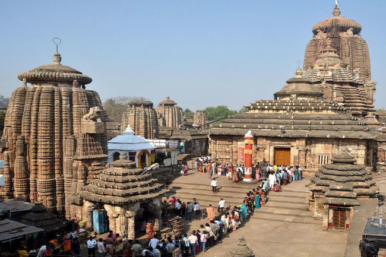

|

|
Lingaraja Temple is a Hindu temple dedicated to Shiva and is one of the oldest temples in Bhubaneswar, the capital of the East Indian state of Odisha. The temple is the most prominent landmark of Bhubaneswar city and one of the major tourist attractions of the state.
The Lingaraja temple is the largest temple in Bhubaneswar. The central tower of the temple is 180 ft (55 m) tall. The temple represents the quintessence of the Kalinga Architecture and culminating the medieval stages of the architectural tradition at Bhubaneswar. The temple is believed to be built by the kings from the Somavamsi dynasty, with later additions from the Ganga rulers. The temple is built in the Deula style that has four components namely, vimana (structure containing the sanctum), jagamohana (assembly hall), natamandira (festival hall) and bhoga-mandapa (hall of offerings), each increasing in the height to its predecessor. The temple complex has 50 other shrines and is enclosed by a large compound wall.
Bhubaneswar is called the Ekamra Kshetra as the deity of Lingaraj was originally under a mango tree (Ekamra) as noted in Ekamra Purana, a 13th-century Sanskrit treatise. The temple is active in worship practises, unlike most other temples in Bhubaneswar and Shiva is worshipped as Harihara, a combined form of Vishnu and Shiva. The temple has images of Vishnu, possibly because of the rising prominence of Jagannath sect emanating from the Ganga rulers who built the Jagannath Temple in Puri in the 12th century.
|